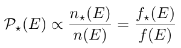

nbopy: tools for generating equilibrium N-body models and embedded massless tracers
code: github.com/rerrani/nbopy; paper: arXiv:1906.01642; plots here are copied from my thesis (link).
code: github.com/rerrani/nbopy; paper: arXiv:1906.01642; plots here are copied from my thesis (link).
nbody.py: The code generates equilibrium N-body realisations of spherical, self-gravitating models with isotropic velocity dispersion, following the procedure described in EP20. The desired density profile needs to be specified; the example code on github generates a Hernquist profile.
The main parameters to adapt are the number of particles to generate, as well as the resolution of the energy and radius grids used to sample the density profile and the distribution function.
The positions of the N-body particles are drawn using inverse transform sampling from the desired density profile.
The distribution function is approximated through a numerical evaluation of the Eddington equation.
Combined with the density of states
the differential energy distribution is computed.
In a final step, for each position r, the likelihood is computed of a particle to have a velocity of v. Isotropic velocities are drawn from this likelihood through rejection sampling.
The output is a 6D array of positions and velocities. Below, as an example, density and radial velocity dispersion for a Hernquist sphere generated using the code. The N-body realization shown has N=107 particles generated for radii in the range -3<log10(r/a)<+3. For reference, the analytical Hernquist density- and radial velocity dispersion profiles are plotted in blue.
The corresponding residuals are as follows, symmetric around the x-axis, with the effects of discreteness noise visible in the central regions:
The code can be easily adapted to generate other spherical models with isotropic kinematics. Adapting the parameters to α=2, β=5, γ=0, for example, produces a Plummer model as shown below.
Launching the code as on github (nbody.py) produces a N=107 particle model of a Hernquist sphere, and saves the particle positions and velocities as a binary numpy file model.npy in 'float16' format (for calculations that use the particle data directly, it is advisable to change the format to 'float64'). Changing the model name in the code to model.dat produces ASCII output.
Tagging probabilities are computed for spherical, isotropic systems, assuming that stars are massless tracers of the underlying potential. The probabilities are proportional to the ratio of the stellar and dark matter distribution functions at fixed energy.

The probabilities need to be computed only once, and can then be applied to all simulation snapshots. The figure below shows two example differential energy distributions of a dark matter halo and an embedded stellar tracer, as well as the resulting tagging probabilities.
Launching the code as on github (first nbody.py, then npaint.py) loads the previously produced N=107 particle model of a Hernquist sphere and computes tagging probabilities for an embedded Plummer model with a scale radius of 20 per cent of the Hernquist scale radius. The probabilities are saved as a numpy file called stars.npy.
The code allows to re-define the center of the N-body model, and its systemic velocity:
Launching the script as on github reads the original model.npy (generated using nbody.py), and saves a Gadget2 compatible HDF5 file to model.hdf5.
tipy: an empirical model for the tidal evolution of NFW subhalos and embedded dwarf galaxies
code: github.com/rerrani/tipy; papers : arXiv:2011.07077, arXiv:2111.05866
code: github.com/rerrani/tipy; papers : arXiv:2011.07077, arXiv:2111.05866
tipy.py, README file (link): This code is an implementation of the EN21 empirical tidal evolution model, outlined below.
The model parameters are calibrated to the tidal evolution of NFW subhalos orbiting within an isothermal potential.

Similarly, the characteristic density of the subhalo is described through the crossing time Tmx at the radius rmx where its circular velocity curve peaks.
The model empirically describes the full time evolution of the subhalo structure towards the final asymptotic remnant state. For subhalos with an initial crossing time of Tmx0/Tperi>2/3 (the heavy mass loss regime), the subhalo crossing time in the final remnant state is set by the host crossing time at pericentre alone:
For ease of use, the code on github (tipy.py) can be run without any modification to produce an example subhalo tidal evolution as a function of time.
The model describes tidal evolution through a truncation in energy in the initial conditions. In the following, energies per unit mass
The shape of the tidal energy truncation may be approximated through the following function:
The mapping is parametrised through the following fit:
The code on github (dNde.py), as an example, is set up to model the evolution of a stellar tracer with initial α=β=3, and a peak of the initial stellar energy distribution at log10(εs)=−0.32.
The code on github runs a minimum working example upon launch: The ASCII file Plummer.dat is read, which contains x,y coordinates of an N-body Plummer model (shown below in the left-hand panel). The output is written to the ASCII file map.dat, which contains x,y pixel coordinates, as well as the average surface brightness at each pixel (plotted below in the right-hand panel).